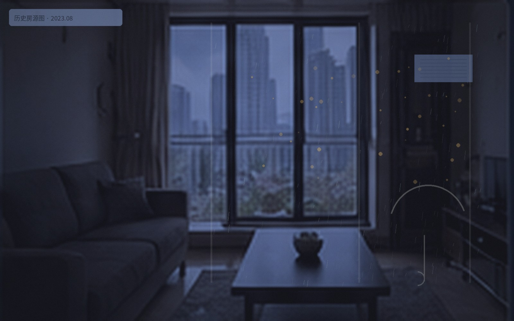

六月连续几场雨之后，我们向住户征集“从家里看出去”的照片。不是比赛，也没有统一器材要求；有人拍树影，有人拍晒台，也有人只拍一扇窗。

“我常常很晚回来，远处那排灯已经成了判断时间的东西。雨天会更亮一点。”
同一期作品
- 《下午四点的树影》 · B栋住户 陈妍
- 《晾衣架之外》 · A栋住户 方屿
- 《高架尽头》 · A栋住户 周芷珩
本页面内容最后更新于 2023-12-20
雨季里，从不同房间看出去的三张照片。
六月连续几场雨之后，我们向住户征集“从家里看出去”的照片。不是比赛，也没有统一器材要求；有人拍树影，有人拍晒台，也有人只拍一扇窗。

“我常常很晚回来，远处那排灯已经成了判断时间的东西。雨天会更亮一点。”